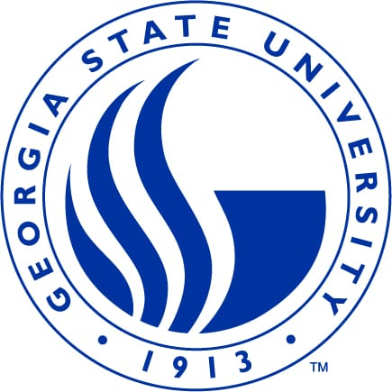

I am a second-year Machine Learning Ph.D. at Georgia State University Mathematics and Statistics, under the guidance of Professor Li-Hsiang Lin. My research focuses on the intersection of machine learning, image science, bioinformatics, and uncertainty control, with a particular interest in health information technology and model simplification.
I earned my Master's in Joint Statistics and Computer Science from Purdue University, where I worked with Professor Qi Guo on a computer vision project. Prior to starting my PhD, I was a graduate research assistant under the supervision of Professor Henry Horng-Shing Lu, working on deep mixture density networks. I completed my undergraduate studies at National Taiwan University, working with Ku-Wei Liao on reliability research.
The paper Deep P-Spline: Fast Tuning, Theory, and Application was selected as a Finalist for the SPES + Q&P Student Paper Competition. I will present our work to judges during the 2025 Joint Statistical Meetings (JSM) in Nashville, Tennessee!
Jul 2024:
Started my PhD journey in Department of Mathematics and Statistics at Georgia State University
May 2020:
Graduated from Department of Bio-environmental Systems Engineering with honor!
Publication
Deep P-Spline: Fast tuning, Theory, and Applications, 2024
Noah Yi-Ting Hung, Li-Hsiang Lin, Vince D. Calhoun
Under Revision at Journal of American Statistical Association (JASA).[arXiv]
We introduce a difference penalty that automates knot selection, thereby simplifying the complexities of neuron selection. We name this method Deep P-Spline (DPS). This approach extends the class of models considered in conventional DNN modeling and forms the basis for a latent variable modeling framework using the Expectation-Conditional Maximization (ECM) algorithm for efficient network structure tuning with theoretical guarantees.
Adopting the Semi-Markov Process, which accommodates non-exponential distribution of state durations, to formulate optimal maintenance strategies for Tainter gate systems that are noted for their prolonged dormancy and significant operational uncertainties.
Research Experience
National Yang Ming Chiao Tung University
Summer Research Assistant with
Professor Henry Horng-Shing Lu
Hsinchu, TW · May 2024 - Aug 2024
Integrated Pre-trained Models with Mixture Density Networks for task of medical image classification.
Purdue University
Graduate Student Researcher with Professor Qi Guo
West Lafayette, IN · May 2022 - May 2023
Executed CNN model on depth sensing with confidence map under adverse weather.
Utilized GANs to optimize performance of Deep CNN on re-corrupted image denoising.
Wokring Experience
AI Camp Inc.
Data Scientist Intern
Palo Alto, CA · May 2022 - Aug 2022
Conducted A/B testing analysis on user interaction data, built predictive models for sales forecasting resulting in 25% improvement in conversion rates.
Engineered a full-stack web application using Flask, HTML/CSS for model deployment, handling 100+ daily user requests for real-time image processing.
Developed and implemented a deep learning model using VGG-19 architecture for Neural Style Transfer (NST)
Education
Georgia State University
PhD in Mathematics and Statistics
Atlanta, GA · 2024 - Present
Advisor: Li-Hsiang Lin

Purdue University
MS in Joint Computer Science and Statistics
West Lafayette, IN · 2021 - 2023
National Taiwan University
BS in Bio-environmental Systems Engineering
Taipei, Taiwan · 2016 - 2020
Talk and Poster
Aug 2025:
Joint Statistical Meetings (JSM) "Deep P-Spline: Fast Tuning, Theory, and Application"
May 2025:
Institute for Mathematical and Statistical Innovation (IMSI) workshop `Kernel Methods in Uncertainty Quantification and Experimental Design`
"Deep P-Spline: Fast Tuning, Theory, and Application"
Jan 2025:
University of Florida Department of Statistics `Annual Winter Workshop` (WW 2025)
"A Novel Framework for Efficient Select Network Structure of Deep P-Spline"
May 2023:
Midwest Machine Learning Symposium (MMLS 2023)
(Poster) "Stability-driven binary matrix factorization for mixed infections of malaria"
Selected Awards
Feb 2025:
Best Student Paper in SPES + Q&P Paper Competition, JSM 2025
Feel free to steal this website's source code. Do not scrape the HTML from this page itself, as it includes analytics tags that you do not want on your own website — use the github code instead. Also, consider using Leonid Keselman's Jekyll fork of this page.


{kind=link}